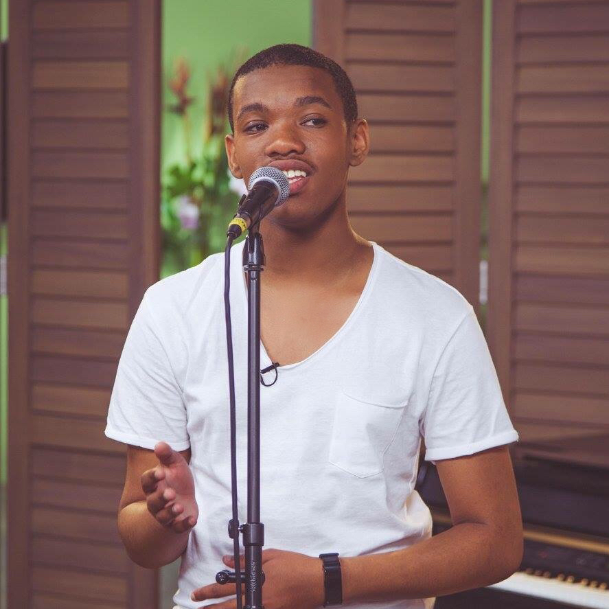
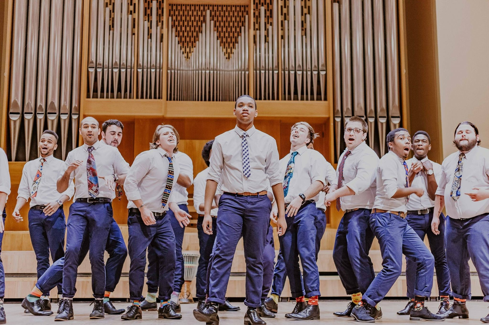

Lemarc Deneal September is a singer-songwriter and full-time BCom student at Stellenbosch University born on , in the small town of Riversdale in the Western Cape, South Africa.
Being raised by a single mother, Lemarc has always had a strong desire to make his mother proud.
Lemarc started reading and writing at the age of 4 and started Grade R at Panorama Primary School the following year.
He proved to be very successful in his studies at this school, receiving the ‘Best in Class’ diploma for three consecutive years.
After showing interest in being proficient in the English language, Lemarc switched to a private English school at the start of the 4th grade.
Switching from schools are usually challenging, and what made this even more challenging was not only the fact that he was moving from an Afrikaans school,
but also the fact that the English school, Christlike Academy, utilizes an American Christian schooling system known as Accelerated Christian Education (A.C.E).

Throughout the years, Lemarc has showed interest in not only his academics but also showcased creativity.
From drama and creative writing to not only songwriting and music production, but also singing and recording his own music.
Showing a keen interest in graphic design, Lemarc took a Corel Draw and Advanced Image Manipulation Techniques course at his school
and ended up selling new business cards, logo and related stationery (letterheads, envelopes etc.) to a local business.
Lemarc started writing songs from the age of 7 and three years later started making beats on his sister’s computer, in hopes that he could release his own music.
In 2013, with the help of his three talented friends, a quartet was formed and was entered in A.C.E’s All African Senior Convention vocal quarter category.
They ended up being nominated to perform in the United States of America at the International Senior Convention.
The following year, Lemarc released his first song and together with a friend auditioned for Showville on SABC2 in 2015.
After an unsuccessful audition, Lemarc decided to spend a lot of time improving himself, while not neglecting his school work.
In May 2016, before turning 17 years old, he matriculated from Christlike Academy with five distinctions.
This was only one goal crossed off on Lemarc’s list as only months later, he debuted his first radio single on GoodHope FM.
Two weeks later, the producers of Expresso on SABC3 requested a performance of this single, and Lemarc, along with the featured rapper, Chizzy, proceeded to perform on national television for the first time.
Lemarc enrolled at Stellenbosch University in 2018 in pursuit of a BCom degree.
Although he prioritizes his studies, he still cultivates his creative side by taking part in the Stellenbosch University Acapella Competition as well as joining the world-renowned Stellenbosch University Choir.
Despite the successes and the failures, one thing is for sure, Lemarc is resilient, goal-driven, and will continue to work hard for what he wants to accomplish.
